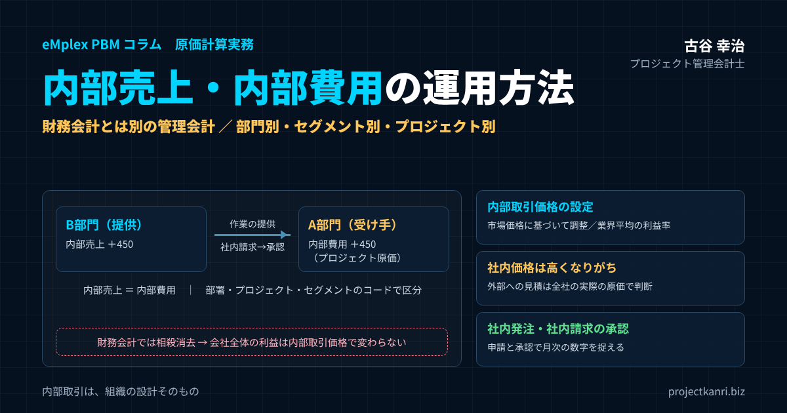

内部売上・内部費用（社内売上・社内取引）の運用方法―財務会計とは別の管理会計で、部門別・セグメント別・プロジェクト別に管理する。内部取引価格の決め方、相殺消去、勘定科目とコード設計、社内発注と社内請求の承認まで

結論：内部取引は「部門の稼ぐ力」を見るための管理会計の道具。価格と承認の仕組みが成否を分ける
この記事の要点
- 定義：部門間の取引を、提供側で内部売上、受け手側で内部費用として記録（内部売上＝内部費用）
- 財務会計とは別：管理会計特有の数字。財務会計では相殺消去する
- 価格：市場価格に基づいて調整。市場価格がなければ業界平均の利益率を参考に
- 失注に注意：社内価格は高くなりがち。外部への見積は会社全体の実際の原価で判断
- コード：内部売上・内部費用の科目＋部署・プロジェクト・セグメントのコード
- 承認：社内発注→社内請求の申請→受け手の承認で、月次の数字を捉える
プロジェクト管理会計士の古谷です。事業部制や、部門ごとに利益の責任を持たせる組織を採る会社をご支援していると、必ずと言ってよいほど議論になるのが、部門の間の取引、つまり内部取引の扱いです。「開発部の人をうちのプロジェクトに使ったら、いくらで計上すればいいのか」「デザイン部が自社のホームページを作ったが、その費用は誰が負担するのか」。こうした問いに、会社としての答えを持っていないと、部門の数字は信頼されず、部門の間の協力も進みません。
内部売上と内部費用は、社内の部門の間で発生した取引を、提供した側の部門では売上として、受けた側の部門では費用として記録するものです。会社の外との取引ではないため、財務会計の決算では相殺されて消えます。つまり、財務会計とは別の、管理会計のための数字です。
本記事の結論は三つです。第一に、内部取引の目的は、部門ごとの稼ぐ力を正しく把握し、部門の間の協力を促すことであり、その目的に照らして必要な範囲で運用すること。第二に、内部取引価格は、市場の価格を基準に調整して決め、そのルールを事前に明文化すること。第三に、社内の発注と請求を、申請と承認の仕組みで確実に記録し、部門、セグメント、プロジェクトの単位で集計できるようにすることです。
内部売上・内部費用とは
内部売上、社内売上とも呼ばれる数字は、部門の間の取引で生じた売上で、管理会計に特有の売上高です。具体的な例で考えてみましょう。
ある会社に、顧客からシステム開発の案件を受注するA部門と、開発を担うエンジニアが所属するB部門があるとします。A部門が受注したプロジェクトの一部の作業を、B部門に依頼しました。このとき、B部門からA部門へ作業を提供したことを、社内取引、あるいは内部取引と呼びます。
| 部門 | 立場 | 計上するもの |
|---|---|---|
| B部門（開発） | 作業を提供した部門 | 内部売上（社内売上） |
| A部門（受注・PM） | 作業を受けた部門 | 内部費用（プロジェクトの原価） |
| 会社全体 | — | 内部売上＝内部費用。財務会計では相殺消去 |
取引が発生すると、作業を提供したB部門では内部売上が、作業を受けたA部門では内部費用が計上されます。同じ取引の裏表なので、内部売上の金額と内部費用の金額は必ず一致します。会社全体で見れば、お金は外に出ていきませんし、外から入ってくるわけでもありません。そのため、財務会計の決算書を作るときには、この内部売上と内部費用を相殺して消去します。
一方で、管理会計のレポートでは、内部売上と内部費用を残したまま、部門ごとの損益を見ます。そうすることで、B部門は社内の他部門にどれだけの価値を提供したのか、A部門は社内の資源をどれだけ使って外部の売上を上げたのかが見えるようになります。
なお、内部売上と内部費用は、内部原価と呼ばれることもあります。売上と原価の取引の場合に内部原価、販売管理費の性質の場合も含めて内部費用、と呼び分ける会社もあります。呼び方よりも、社内でどの科目をどう使うのかを統一しておくことが大切です。
なぜ内部取引を管理するのか
内部取引を管理する目的は、部門ごとの収益を適正に把握することにあります。
| 目的 | 内部取引がない場合 | 内部取引がある場合 |
|---|---|---|
| 部門の収益の適正な把握 | 提供部門は人件費だけ残り赤字に見える | 社内への提供に応じた売上が立つ |
| 受け手の部門の実態の把握 | 社内資源のコストを負担せず利益が過大 | 使った社内資源の費用が載る |
| 部門間の協力の促進 | 人を出しても評価されない | 社内への提供が評価される |
内部取引を記録しない場合、B部門のエンジニアがA部門のプロジェクトで働いても、B部門の損益には人件費だけが残り、売上はゼロです。B部門は、会社に貢献しているにもかかわらず、数字の上では赤字の部門に見えてしまいます。逆に、A部門は、B部門の人を使っているのに、その費用を負担していなければ、実態よりも大きな利益を上げているように見えます。
内部取引を記録すれば、B部門には社内への提供に応じた売上が立ち、A部門には社内の資源を使った分の費用が載ります。これにより、それぞれの部門の稼ぐ力を、より実態に近い形で比べることができます。
もう一つの目的は、部門の間の協力を促すことです。B部門に余裕のある人がいて、A部門のプロジェクトに人が足りないとき、内部取引の仕組みがあれば、B部門は社内に人を提供することで売上を上げることができます。社内の人を使えば、外部に委託するよりも、会社全体としては安く済むことが多くあります。内部取引の仕組みは、社内の資源を有効に活用するための仕組みでもあるのです。
ただし、内部取引の管理には、記録や調整の手間がかかります。目的に対して手間がかかりすぎるなら、運用の範囲を絞るか、後で述べるように、工数と標準の単価で原価を付け替えるだけの簡易な方法を選ぶことも検討してください。
内部取引の仕組みを導入する前に、経営として、どの部門を利益の責任を持つ部門とし、どの部門を原価や費用を管理する部門とするのかを、組織の方針として決めておきましょう。その方針が、内部取引の対象と価格の決め方の出発点になります。
財務会計との関係：相殺消去と、子会社との取引との違い
内部売上と内部費用は、財務会計とは別の管理会計の数字です。財務会計の決算書には、会社の外との取引だけが載ります。部門の間の取引は、会社という一つの法人の中で、お金も権利も移動していないため、売上や費用として計上されることはありません。
| 観点 | 社内の部門間（内部取引） | 親会社・子会社間 |
|---|---|---|
| 法的な取引 | ない（同じ法人の中） | ある（法人と法人） |
| 請求書・支払い | なし（社内の記録のみ） | あり |
| 個別の財務会計 | 計上しない（計上した場合は相殺消去） | 売上・費用として計上 |
| 連結決算 | — | 連結会社間取引として相殺消去 |
| 税務 | 対象外 | 消費税・法人税の対象。海外関連会社は移転価格税制も |
ここで注意したいのは、社内の部門の間の取引と、グループの会社の間の取引の違いです。親会社と子会社の間の取引は、法人と法人の間の実際の取引であり、それぞれの会社の財務会計の決算書に、売上と費用として計上されます。そのうえで、グループの連結の決算書を作るときに、連結の会社の間の取引として相殺消去されます。請求書も実際に発行され、消費税や法人税の処理も伴います。
一方で、同じ会社の中の部門の間の取引は、請求書も実際の支払いもない、社内だけの記録です。消費税や法人税の対象にもなりません。管理会計の上で売上と費用として扱っているだけで、法的な取引ではないのです。この違いを理解しておかないと、社内の取引を財務会計の帳簿に混ぜてしまい、決算の作業で混乱が生じます。
なお、海外の関連会社との間の取引の価格については、移転価格税制の対象になるなど、税務の観点からも価格の妥当性が問われます。グループの会社の間の取引の価格の設定は、税理士などの専門家に相談してください。本記事で扱うのは、主に同じ会社の中の部門の間の内部取引です。
他勘定振替高との違い
内部売上と混同されやすいものに、他勘定振替高があります。両者は似ていますが、目的も性質も異なります。
| 観点 | 内部売上・内部費用 | 他勘定振替高 |
|---|---|---|
| 会計の種類 | 管理会計 | 財務会計 |
| 内容 | 部門間の取引を売上と費用として両部門に記録 | 原価として集計した費用を資産・販管費などへ付け替え |
| 決算書 | 残らない（相殺消去） | 原価の内訳などに表示されることがある |
| 例 | 開発部門が他部門のプロジェクトに作業を提供 | 製造部門の人件費を自社利用ソフトウェアに振り替え |
他勘定振替高は、財務会計の処理です。たとえば、製造の原価として集計していた人件費の一部を、自社で使うソフトウェアの開発に使った場合、その分を製造の原価から外し、ソフトウェアの資産や、販売費及び一般管理費に振り替えます。原価の集計の対象から外れたことを示すために、損益計算書の原価の内訳などで、他勘定振替高として表示されます。
これに対して、内部売上と内部費用は、管理会計の処理で、部門の間の取引を、売上と費用として両方の部門に記録するものです。財務会計の決算書には残りません。他勘定振替高が原価の付け替えであるのに対し、内部売上と内部費用は、部門の間の売り買いを擬似的に記録するもの、と整理すると分かりやすいでしょう。
実務では、同じ出来事が、管理会計では内部取引として、財務会計では他勘定振替として処理されることがあります。後で紹介する、デザインの部門が自社のホームページを制作する例がその典型です。会計の処理の詳細は、監査法人や税理士に確認してください。
両者の違いを社内で共有しておくと、経理と現場の会話の行き違いも減ります。
内部取引の三つのパターン：原価になるもの、販管費になるもの
内部取引というと、プロジェクトの作業の一部を他の部門に依頼する、売上と原価の取引を思い浮かべる方が多いでしょう。しかし、内部取引には、売上と販売管理費の取引のパターンもあります。
| パターン | 例 | 受け手の内部費用の性質 |
|---|---|---|
| 売上×原価 | B部門が、A部門の顧客プロジェクトの一部の作業を担う | プロジェクトの原価 |
| 売上×販売管理費 | デザイン制作部門が、自社のホームページを制作する | 広告宣伝などの販管費（財務会計では振替が必要な場合も） |
| 全社共通サービス | 情報システム・総務・経理のサービス | 内部取引として請求、または本社費として配賦 |
一つ目は、売上と原価のパターンです。A部門が受注した顧客のプロジェクトの一部の作業を、B部門が担う場合です。A部門にとって、内部費用はプロジェクトの原価になります。
二つ目は、売上と販売管理費のパターンです。たとえば、会社のホームページの制作を、社内のデザイン制作の部門が請け負う場合です。デザイン制作の部門には内部売上が立ち、ホームページを依頼した広報や管理の部門には内部費用が立ちます。この内部費用は、顧客のプロジェクトの原価ではなく、会社の広告や宣伝のための費用、つまり販売管理費の性質を持ちます。
このパターンは、財務会計の処理とも関わります。デザイン制作の部門の人件費は、通常は制作の原価として集計されています。しかし、自社のホームページの制作に使った時間の人件費は、顧客の案件の原価ではありません。財務会計では、その分を原価から外して、販売管理費などに振り替える処理が必要になることがあります。先ほどの他勘定振替高の考え方です。管理会計の内部取引と、財務会計の振替を、同じ社内の申請の記録から処理できるようにしておくと、二重の作業を防げます。
三つ目は、全社共通のサービスのパターンです。情報システムの部門や、総務、経理といった管理の部門が、各部門にサービスを提供する場合です。これを内部取引として各部門に請求する会社もあれば、本社費として配賦する会社もあります。管理の部門のサービスは、市場の価格と比べにくいものが多いため、配賦で扱うほうが運用は簡単です。
業種別の内部取引の例
内部取引は、プロジェクト型ビジネスのさまざまな業種で発生します。代表的な例を整理しておきます。
| 業種 | 提供する部門 | 受ける部門 | 単価の単位の例 |
|---|---|---|---|
| 建設業 | 設計部門、機材部門 | 工事部門 | 設計の時間単価、機材の日額 |
| システム開発 | 基盤・運用チーム | 各事業部のプロジェクト | 役割別の時間単価 |
| 映像・広告制作 | 撮影・編集・音響・デザイン部門 | プロデューサーの部門 | 日額、時間単価 |
| コンサルティング | 専門領域のチーム | 他チームの案件 | 専門家の時間単価 |
建設業では、設計の部門が工事の部門のために設計を行う、機材の部門が工事の現場に機材を貸し出すといった取引があります。システム開発では、基盤の構築や運用を担うチームが、各事業部のプロジェクトに作業を提供する取引がよく見られます。映像や広告の制作では、撮影、編集、音響、デザインといった専門の部門が、プロデューサーの部門の作品の制作に参加する取引があります。コンサルティングでは、専門の領域を持つチームが、他のチームの案件に専門家を派遣する取引があります。
どの業種でも、提供する部門の工数をプロジェクトのコードとともに記録し、事前に定めた単価で内部取引を計上するという基本は同じです。業種ごとの取引の特徴に合わせて、内部取引の単価の表の区分を工夫してください。たとえば、機材の貸し出しであれば日数あたりの単価、専門家の派遣であれば役割ごとの時間単価、といった具合です。
例：デザイン制作部門が自社のホームページを制作した場合
売上と販売管理費のパターンを、具体的な数字で見てみましょう。社内のデザイン制作の部門が、広報の部門から依頼を受けて、会社のホームページを制作したとします。制作にかかった工数は120時間でした。
| 区分 | デザイン制作部門 | 広報部門 | 会社全体 |
|---|---|---|---|
| 管理会計 | 内部売上 72万円（120h×内部単価6,000円） | 内部費用 72万円（販管費） | 相殺して0 |
| 財務会計 | 制作原価から54万円（120h×原価単価4,500円）を振替 | — | 販管費等として54万円（処理は専門家に確認） |
| 差額 | 18万円は部門の内部利益（全社には存在しない） |
数値は説明のための例です。
管理会計では、デザイン制作の部門に、120時間に内部取引の単価6,000円を掛けた72万円の内部売上を計上し、広報の部門に同じ72万円の内部費用を計上します。広報の部門の内部費用は、広告宣伝の性質を持つ販売管理費として扱います。デザイン制作の部門は、社内の仕事でも売上を上げたことになり、広報の部門は、ホームページの制作にいくらかかったのかを、自部門の費用として把握できます。
一方で、財務会計では、内部売上と内部費用はどちらも計上しません。代わりに、デザイン制作の部門の人件費のうち、ホームページの制作に使った120時間分、たとえば原価の単価4,500円で計算した54万円を、制作の原価から外して、販売管理費などに振り替える処理を検討します。この振替をしないと、顧客の案件の原価に、自社のホームページの制作の費用が混ざってしまいます。なお、制作したものの内容や使い方によっては、資産として扱うべきかどうかの判断も必要になります。具体的な処理は、監査法人や税理士に確認してください。
管理会計の72万円と、財務会計の54万円の差の18万円は、デザイン制作の部門の内部の利益にあたり、会社全体では存在しない利益です。この差を理解しておくことが、管理会計と財務会計をつなぐうえで大切です。
数値例：内部取引価格で部門の利益はこれだけ変わる
内部取引価格をいくらにするかで、部門の利益は大きく変わります。数値例で確認してみましょう。
A部門が、顧客から1,000万円のシステム開発のプロジェクトを受注しました。A部門自身の人件費は250万円、外部の会社への外注費は150万円です。開発の一部をB部門に依頼し、B部門のエンジニアの人件費、つまりB部門の原価は300万円でした。会社全体では、売上1,000万円に対して原価が700万円で、利益は300万円です。
| 内部取引価格 | A部門の利益 | B部門の利益 | 会社全体の利益 |
|---|---|---|---|
| 原価基準（300） | 300 | 0 | 300 |
| 原価＋20%（360） | 240 | 60 | 300 |
| 市場価格（450） | 150 | 150 | 300 |
| 高すぎる社内価格（600） | 0 | 300 | 300 |
A部門：売上1,000、自部門の人件費250、外注費150、内部費用＝内部取引価格。B部門：内部売上＝内部取引価格、原価300。数値は例です。
内部取引価格を原価と同じ300万円にすると、A部門の利益は300万円、B部門の利益はゼロです。原価に20%の利益を乗せた360万円にすると、A部門は240万円、B部門は60万円になります。同じ作業を外部に委託した場合の市場の価格が450万円だとして、それを内部取引価格にすると、A部門とB部門は150万円ずつ利益を分け合います。そして、内部取引価格を600万円と高く設定すると、A部門の利益はゼロになり、B部門が300万円の利益を独占します。
どの場合も、会社全体の利益は300万円で変わりません。内部取引価格は、会社全体の利益を増やしも減らしもしません。変わるのは、その利益を、どの部門の成果として見るかだけです。だからこそ、内部取引価格の決め方は、部門の評価と、部門の間の関係に、大きな影響を与えるのです。
この例は、内部取引価格を決めることの重みを示しています。600万円という高い価格は、B部門の数字を良く見せますが、A部門はこのプロジェクトで利益を上げられなかったことになり、次に同じような案件があったとき、A部門はB部門に依頼することをためらうでしょう。逆に、原価の300万円では、B部門は社内のために働いても利益がゼロとなり、社内の依頼を後回しにする動機が生まれます。どちらの極端も、部門の行動を会社全体の利益から遠ざけてしまいます。
内部取引価格の設定方法
セグメントの会計や部門の管理会計で最も困難なのが、内部取引価格の設定だと言われます。代表的な方法を整理します。
| 方法 | 内容 | 長所 | 短所 |
|---|---|---|---|
| 原価基準 | 提供部門の原価のまま | 簡単、争いが少ない | 提供部門に利益が残らず協力に消極的 |
| 原価加算基準 | 原価＋一定の利益 | 提供部門に動機が生まれる | 利益率の決め方が論点 |
| 市場価格基準 | 外部調達した場合の価格を基準に調整 | 市場の物差しで評価できる | 市場価格の把握が必要 |
| 交渉価格 | 部門間の交渉で決定 | 自主性を尊重 | 時間がかかり力関係に左右 |
| 二重価格 | 提供側は市場価格、受け手は原価 | 両部門の動機を保てる | 内部売上と内部費用が一致せず複雑 |
原価基準は、提供した部門の原価をそのまま内部取引価格にする方法です。計算が簡単で、部門の間の争いも起きにくい一方で、提供した部門には利益が残りません。提供した部門は、社内に人を出しても評価されないため、社内の取引に消極的になりがちです。
原価加算基準は、原価に一定の利益を加える方法です。提供した部門にも利益が残り、社内の取引に協力する動機が生まれます。加える利益の率をどう決めるかが論点になります。
市場価格基準は、同じような作業やサービスを外部から調達した場合の価格を基準にする方法です。社内で取引されるサービスに、市場の価格を持つ類似のサービスがある場合、その市場の価格に基づいて調整した価格を内部取引価格として使うことが、私は最も望ましいと考えています。部門の成果を、外部の市場の物差しで評価できるからです。
交渉価格は、提供する部門と受ける部門が交渉して決める方法です。部門の自主性を尊重できる一方で、交渉に時間がかかり、部門の力関係で価格が決まってしまうおそれがあります。二重価格は、提供する部門には市場の価格で売上を立て、受ける部門には原価で費用を立てる方法です。両方の部門の動機を保てますが、内部売上と内部費用が一致しないため、差額の扱いが複雑になります。
実務では、これらの方法を組み合わせることもよくあります。たとえば、作業の種類ごとに、市場の価格が分かるものは市場価格基準、分からないものは原価加算基準を使うといった具合です。組み合わせる場合も、どの取引にどの方法を使うのかを、ルールとして一覧にしておくことが大切です。
社内価格は高くなりがち：高い内部費用が失注を招く
内部取引価格の設定で、私が特に注意を促したいのが、社内の取引の価格が高くなりがちだということです。
社内の取引には、社外との競争がありません。外部の外注先であれば、価格が高ければ他の会社に依頼されてしまいますが、社内の部門は、多くの場合、社内のルールで取引の相手として決まっています。そのため、提供する部門は、自部門の利益を確保するために、価格を高めに設定しがちです。
私自身、前職で、この問題を目の当たりにしたことがあります。高い社内の費用をもとに、外部の顧客への提案の価格を設定した結果、価格が競合よりも高くなり、案件を失注することがありました。社内の部門の利益を守るための価格が、会社全体の受注の機会を奪ってしまったのです。
| 問題 | 対策 |
|---|---|
| 社外との競争がない | 市場価格と比べて妥当な水準に保つ |
| 高い内部費用で外部への提案価格を設定 | 外部への見積は会社全体の実際の原価で採算判断 |
| 受け手の部門に選択肢がない | 一定の条件で外部委託を選べるルール、価格見直しの要求 |
この問題を防ぐには、二つのことが大切です。一つ目は、外部の顧客への見積を作るときは、内部取引価格ではなく、会社全体の実際の原価をもとに採算を判断することです。内部取引価格は、部門の評価のための社内の価格であり、会社としての受注の判断の基準ではありません。先ほどの数値例で言えば、B部門の作業の会社にとっての原価は300万円であり、内部取引価格の600万円ではありません。
二つ目は、内部取引価格そのものを、市場の価格と比べて妥当な水準に保つことです。社内の価格が市場の価格を大きく上回っているなら、受ける部門が外部の委託先を選べるようにする、あるいは価格の見直しを求められるようにするといったルールを設けることも検討します。社内の取引にも、一定の競争の緊張感を持たせるのです。
社内に頼むか、外部に頼むか：会社にとっての正しい判断
内部取引の仕組みがあると、受ける部門は、社内の部門に頼むか、外部の会社に頼むかを、内部取引価格と外部の価格で比べるようになります。しかし、会社全体にとって正しい判断は、内部取引価格ではなく、会社にとっての実際の費用で比べることで得られます。
| 比べる数字 | 社内（B部門） | 外部委託 |
|---|---|---|
| A部門から見た費用 | 内部取引価格 450 | 420 |
| 会社全体の追加費用（B部門に余裕がある場合） | ほぼ0（人件費300は発生済み） | 420 |
| 会社全体の追加費用（B部門が外部案件で手一杯の場合） | 外部案件の利益の機会損失 | 420 |
先ほどの例で、B部門の作業の内部取引価格が450万円、外部の会社に委託した場合の価格が420万円だったとします。A部門から見ると、外部に頼んだほうが30万円安くなります。しかし、B部門の人に余裕があり、他に仕事がない状態であれば、B部門の人件費300万円は、社内に頼んでも頼まなくても発生します。会社全体で見れば、社内に頼めば追加の費用はほとんどかからず、外部に頼めば420万円が外に出ていきます。
つまり、提供する部門に余裕がある場合は、内部取引価格が外部の価格より高くても、社内に頼むほうが会社全体には有利になることがあります。逆に、提供する部門の人が他の外部の案件で忙しく、その案件の利益を犠牲にして社内の仕事をするのであれば、その機会の損失も考慮しなければなりません。
このような判断を、部門の担当者に任せきりにすると、部門の利益を優先した判断になりがちです。金額の大きい案件や、部門の間で判断が分かれる案件は、会社全体の視点で判断できる人が関わる仕組みにしておきましょう。
判断の理由と結果の記録を残しておけば、後で同じような案件が出たときの判断の参考にもなります。
市場価格に基づいて調整する：業界平均の利益率の活用
市場価格基準を採る場合、市場の価格をそのまま内部取引価格にするのではなく、社内の取引の特徴に合わせて調整することが一般的です。
社内の取引では、外部の取引で必要になる費用の一部が不要になります。営業の活動、契約の手続き、与信の管理、請求と回収の事務などです。外部の会社の価格には、こうした費用と、その会社の利益が含まれています。そのため、市場の価格から、社内の取引では不要な費用に相当する分を差し引いて、内部取引価格とする考え方があります。
| 項目 | 考え方 |
|---|---|
| 市場価格 | 同等の作業を外部に委託した場合の価格（例：450万円） |
| 差し引くもの | 社内取引では不要な営業・契約・与信・請求回収のコスト相当（例：市場価格の5%） |
| 内部取引価格 | 市場価格から調整（例：約428万円） |
| 市場価格がない場合 | 原価＋業界平均の利益率 |
| 見直し | 役割・作業別の単価表を年1回見直す |
市場の価格が把握しにくい場合は、原価に、業界の平均的な利益率を加えて内部取引価格を決める方法がよく使われます。同じような作業やサービスを提供する外部の会社が、一般にどの程度の利益率で事業をしているのかを参考に、原価加算の率を決めるのです。外部の会社の公開されている決算の情報や、業界の統計なども参考になります。
どの方法を採るにしても、大切なのは、価格の決め方のルールを事前に明文化し、全部門に共有しておくことです。取引のたびに価格を議論していては、手間がかかるうえに、部門の間の関係も悪くなります。役割や作業の種類ごとの内部取引の単価の表を作り、年に一度、市場の価格や原価の変化に合わせて見直す運用をお勧めします。
管理部門のサービスは内部取引か、配賦か
情報システム、総務、経理、人事といった管理部門のサービスを、内部取引として各部門に請求するのか、本社費として配賦するのかは、会社によって考え方が分かれます。
内部取引として請求する方法は、サービスの利用の量に応じて費用を負担させるため、各部門がサービスの使い方を意識するようになるという効果があります。たとえば、情報システムの部門が、問い合わせの対応やパソコンの設定を件数に応じて請求すれば、各部門は不要な依頼を減らそうとします。一方で、件数の記録と請求の手間がかかり、管理部門のサービスに市場の価格がないことが多いため、価格の決め方も難しくなります。
配賦の方法は、人数や売上などの基準で、管理部門の費用を各部門に割り振ります。運用は簡単ですが、各部門は自部門の利用の量と負担が結びつかないため、サービスの使い方を意識しにくくなります。
私がお勧めしているのは、利用の量を測りやすく、部門ごとの使い方に大きな差があるサービスだけを内部取引とし、それ以外は配賦で扱うという使い分けです。すべての管理部門のサービスを内部取引にしようとすると、記録の手間が成果を上回ります。
部門間の軋轢をどう防ぐか
内部取引価格を設定すると、提供する部門と受ける部門の間で、利益が相反します。提供する部門はできるだけ高く売りたく、受ける部門はできるだけ安く買いたい。この利益の相反は、内部取引の仕組みに必ずついて回るものであり、放置すると部門の間の軋轢が生まれます。
| 工夫 | 内容 |
|---|---|
| 事前のルール | 取引前に単価表と計算方法を決め、全部門に共有 |
| 評価の多面化 | 内部取引の利益だけでなく、外部売上・全社利益への貢献・協力度も評価 |
| 裁定の仕組み | 合意できない場合は管理会計の担当部門、最終的に経営が裁定 |
| 目的の共有 | 内部取引は全社の利益を最大にするための仕組みと経営が繰り返し伝える |
軋轢を防ぐための第一の工夫は、価格のルールを、取引が始まる前に決めておくことです。取引が終わった後に価格を決めようとすると、互いに自部門に有利な理由を並べ、争いになります。単価の表を事前に定め、それに従って計上することを原則とします。
第二の工夫は、部門の評価を、内部取引の利益だけで行わないことです。部門の評価に、外部の売上や会社全体の利益への貢献、社内の協力の度合いなどを組み合わせれば、内部取引価格をめぐる争いの重みは小さくなります。
第三の工夫は、争いが起きたときの裁定の仕組みを決めておくことです。部門の間で合意できない場合は、経営企画や管理会計の担当の部門が、ルールに照らして判断する。最終的には経営が裁定する。この仕組みがあれば、部門の間の争いが長引くことを防げます。内部取引は、部門を競わせるためではなく、会社全体の利益を最大にするための仕組みであることを、経営が繰り返し伝えることが何より大切です。
内部取引のルールを規程にまとめる
内部取引の運用を安定させるには、ここまでの考え方を、社内の規程やルールの文書にまとめておくことをお勧めします。担当者が変わっても同じ考え方で運用でき、部門の間で争いが起きたときにも、文書に立ち返って判断できるからです。
| 項目 | 内容 |
|---|---|
| 目的 | 部門の収益の把握、社内資源の活用、プロジェクト原価の把握など |
| 対象範囲 | 内部取引とする取引、配賦で扱う取引の区分 |
| 価格 | 設定方法と単価表、見直しの時期 |
| 流れと期限 | 社内発注・請求・承認の手順と締めの日程 |
| 計上ルール | 承認時点での計上、保留・見込み計上の扱い |
| 裁定 | 部門間で合意できない場合の判断者と手順 |
規程には、内部取引の目的、対象となる取引の範囲、内部取引価格の決め方と単価の表、社内の発注、請求、承認の流れと期限、月次の計上のルール、争いが起きたときの裁定の手順、そして見直しの時期を盛り込みます。規程は、経営の承認を得て、全部門に周知します。
規程は、作ったら終わりではありません。内部取引の運用を始めてみると、想定していなかった取引や、判断に迷う場面が必ず出てきます。そうした事例を記録し、年に一度の見直しの際に規程に反映させていくことで、ルールは会社の実態に合ったものに育っていきます。
規程は簡潔にまとめ、単価の表などの頻繁に見直す部分は、別紙として管理すると運用しやすくなります。
セグメント会計と内部取引
上場企業などが開示するセグメントの情報は、マネジメント・アプローチ、つまり経営者が意思決定や業績の評価のために使っている事業の区分を基礎に作られます。社内の管理会計で事業や部門ごとの損益を見ているなら、その仕組みがそのまま開示の基礎になるということです。
セグメントの情報では、一般に、外部の顧客への売上高と、セグメントの間の内部の売上高や振替高を区分して示し、セグメントの合計と、決算書の数字との差異を調整して説明します。内部取引を管理会計で正しく記録し、外部の売上と内部の売上を区分しておくことは、将来の開示の準備にもなります。
| 項目 | 内容 |
|---|---|
| 基礎 | マネジメント・アプローチ（経営者が意思決定・業績評価に使う区分） |
| 売上高の区分 | 外部顧客への売上高と、セグメント間の内部売上高・振替高 |
| 差異調整 | セグメントの合計と決算書の数字との差を調整して説明 |
| 準備 | 管理会計で外部売上と内部売上を区分しておく |
開示要件の詳細は企業会計基準第17号等と監査法人にご確認ください。
上場を目指す会社にとっては、社内の管理会計の区分と、開示するセグメントの区分をどう対応させるのかも、早めに検討しておくべき論点です。社内の部門の区分と、開示するセグメントの区分が一致していれば、管理会計の数字から開示の数字を作る作業は比較的簡単になります。開示の要件の詳細は、企業会計基準第17号などの基準と、監査法人に確認してください。
セグメントの間の内部取引の価格の決め方も、開示の際に問われることがあります。社内の管理会計で使っている内部取引価格のルールを文書にしておけば、監査法人への説明もしやすくなります。
勘定科目とコードの設計：内部売上・内部費用の仕訳
内部取引を管理会計で正しく集計するには、勘定科目とコードの設計が欠かせません。
| 項目 | 設計のポイント |
|---|---|
| 勘定科目 | 内部売上、内部費用（原価性・販管費性に分ける）を独立した科目に |
| 部署コード | 内部売上は提供部署、内部費用は受け手の部署 |
| プロジェクトコード | 内部費用をプロジェクト原価として集計 |
| セグメントコード | セグメント間取引として集計 |
| 取引先コード | どの顧客の案件のための取引かを把握 |
まず、勘定科目として、内部売上と内部費用を設けます。外部の売上や費用と混ざらないよう、必ず独立した科目にします。内部費用は、原価の性質のものと、販売管理費の性質のものに分けておくと、先ほどの三つのパターンに対応しやすくなります。
そのうえで、仕訳には、部署のコードを必ず付けます。内部売上は提供した部署に、内部費用は受けた部署に計上します。さらに、その取引が関わるプロジェクトのコードと、セグメントのコードも付けて区分します。プロジェクトのコードがあれば、内部費用をプロジェクトの原価として集計でき、セグメントのコードがあれば、セグメントの間の取引として集計できます。
| 部署 | 科目 | 金額 | コード |
|---|---|---|---|
| B部門（提供） | 内部売上 | 450 | プロジェクトP-101、セグメント：受託開発 |
| A部門（受け手） | 内部費用（原価） | 450 | プロジェクトP-101、セグメント：受託開発 |
| 会社全体 | 相殺消去 | 0 | 内部売上－内部費用＝0を毎月確認 |
仕訳の形は、提供した部署の側で内部売上を、受けた部署の側で同じ金額の内部費用を計上する、一対の記録になります。内部売上と内部費用の合計は、会社全体では必ず一致し、相殺するとゼロになります。この一致を毎月確認することが、内部取引の記録の正しさを確かめる基本の手続きです。
部門の組織の変更があった場合は、部署のコードの変更の時期と、内部取引の計上先の部署の切り替えの時期をそろえることも忘れないでください。組織の変更の月に、古い部署と新しい部署の間で内部取引の記録が分かれてしまうと、部門の損益の比較が難しくなります。
会計ソフトの中で処理するか、外で処理するか
内部取引の記録を、どこで行うかには、大きく二つの考え方があります。
| 方法 | 長所 | 注意点 |
|---|---|---|
| 会計ソフトの中（内部取引の勘定＋決算時に相殺） | 部門別集計の機能を使える | 相殺漏れで決算の数字が誤るリスク |
| 会計ソフトの外（簿外の管理会計として加算） | 財務会計の帳簿をきれいに保てる | 二つの数字を組み合わせる作業と確認 |
| 統合されたフロントシステム | 申請・承認・工数・集計を一体で処理 | 導入と運用ルールの整備 |
一つ目は、会計ソフトの中に内部売上と内部費用の勘定科目を設けて仕訳を入力し、財務会計の決算書を作るときに相殺する方法です。会計ソフトの部門の別の集計の機能を使えば、部門ごとの損益を内部取引を含めて出すことができます。一方で、財務会計の帳簿に、外部の取引ではない記録が混ざるため、決算のたびに相殺の処理を確実に行う必要があり、相殺の漏れがあれば決算の数字が誤ります。
二つ目は、内部取引を財務会計の外、つまり会計ソフトを通さずに管理する方法です。内部取引は、あくまで管理会計のための簿外の処理だと割り切り、表計算ソフトや、管理会計のための仕組みで記録します。そして、財務会計の部門別、プロジェクト別の数字に、内部取引の数字を足し合わせることで、管理会計のレポートを作ります。財務会計の帳簿をきれいに保てる一方で、二つの数字を組み合わせる作業と、その正しさの確認が必要になります。
どちらの方法でも、マクロの視点でいうセグメントや部署の損益と、ミクロの視点でいうプロジェクトや取引先ごとの損益の両方を、内部取引を含めてレポーティングできるようにすることが目標です。会社の規模が小さく、内部取引の件数が少ないうちは表計算ソフトでも運用できますが、件数が増えると、転記や集計の誤りが増え、月次の締めにも時間がかかるようになります。その段階では、後で述べる統合された仕組みの導入を検討してください。
社内発注と社内請求の仕組み：申請がなければ数字は掴めない
内部取引の運用で、最も注意すべきなのは、社内の発注と社内の請求の処理の仕組みです。外部との取引であれば、請求書が届き、支払いや入金が発生するため、取引の事実は自然に記録されます。しかし、内部取引には、外部への請求も支払いもありません。確実な申請の処理がなければ、内部取引の数字を捉えることはできないのです。
| 段階 | 担い手 | 記録すること |
|---|---|---|
| 1. 社内発注 | 依頼する部門 | 依頼内容・期間・見込み金額・プロジェクトコード |
| 2. 受注・作業 | 提供する部門 | 工数（タイムシートにプロジェクトコード付きで） |
| 3. 社内請求の申請 | 提供する部門 | 実績工数×内部単価、金額 |
| 4. 承認 | 依頼した部門 | 内容の確認、承認・差し戻し |
| 5. 計上 | 管理会計の担当 | 内部売上・内部費用を一対で計上 |
私がお勧めしているのは、外部との取引と同じように、社内の発注、作業の実施、社内の請求、承認という流れを、仕組みとして決めることです。まず、作業を依頼する部門が、依頼の内容、期間、見込みの金額、プロジェクトのコードを記載した社内の発注を出し、提供する部門が受けます。作業が終わった、あるいは月末になったら、提供する部門が、実績の工数や金額を記載した社内の請求を申請します。そして、依頼した部門が内容を確認し、承認します。
この流れを踏むことで、内部取引の金額について、両方の部門が事前と事後に合意したことになります。後になって「そんな金額は聞いていない」という争いが起きることを防げます。社内の発注の段階で見込みの金額を合意しておけば、依頼する部門は、プロジェクトの予算に内部費用を織り込むことができます。
提供する部門の工数を、タイムシートでプロジェクトのコードとともに記録しておけば、社内の請求の根拠として使えます。工数に、事前に定めた内部取引の単価を掛けて金額を算出すれば、請求の金額の計算も機械的に行えます。
社内の発注の書式は、外部への発注書と同じ項目をそろえておくと、運用がスムーズです。依頼の日付、依頼の部門と担当者、提供する部門、作業の内容と範囲、期間、見込みの工数と金額、プロジェクトのコード、承認者を記載します。作業の範囲が途中で広がった場合は、変更の発注を出し直すルールにしておきます。
月次の計上のタイミング：申請と承認で数字を捉える
内部取引を月次の数字として捉える場合、いつの時点で計上するのかを決めておく必要があります。私がお勧めしているのは、内部売上を計上する部署から確実に申請され、内部費用を計上する部署の承認を得た段階で、数字として捉えるという考え方です。
| 項目 | ルール |
|---|---|
| 締め | 月末 |
| 社内請求の申請期限 | 月末後の第2営業日 |
| 承認期限 | 月末後の第3営業日 |
| 期限内に承認 | 当月に計上 |
| 未承認・期限後の申請 | 保留し翌月に計上（大口は見込みで当月計上し翌月調整） |
月末を締めの日とし、月末後の決まった営業日までに、提供する部門が社内の請求を申請します。依頼した部門は、その次の決まった営業日までに承認します。承認されたものは当月の内部取引として計上し、期限までに承認されなかったものは、保留として扱い、内容を確認したうえで翌月に計上します。
期限を過ぎて申請されたものは、原則として翌月の計上とします。ただし、金額が大きい場合や、プロジェクトの損益に大きな影響がある場合は、見込みの金額で当月に計上し、翌月に差額を調整する方法もあります。この考え方は、外部の取引の月次決算で、届いていない請求書を見積で計上するのと同じです。
承認の期限を守ってもらうためには、内部取引の締めの日程を、月次決算の締めのカレンダーに組み込んでおくことが大切です。内部取引の承認が遅れると、部門別やプロジェクト別の損益の確定が遅れ、月次の経営会議に間に合わなくなります。
予算にも内部取引を組み込む
内部取引を実績として記録するなら、予算の段階でも内部取引を組み込んでおく必要があります。予算に内部取引が含まれていなければ、実績と予算を比べたときに、内部取引の分だけ差異が出てしまい、本当の差異が見えなくなります。
部門の予算を作るときは、提供する部門は、社内の他の部門に提供する見込みの工数と内部売上を、受ける部門は、社内の他の部門から受ける見込みの内部費用を、それぞれ見積もります。そのうえで、会社全体で、内部売上の予算と内部費用の予算が一致しているかを確認します。一致していなければ、どちらかの部門の見込みがずれているということであり、部門の間で調整します。
プロジェクトの予算でも、他の部門に依頼する見込みの作業を、内部費用として実行予算に含めます。社内の発注の段階で見込みの金額を合意しておけば、プロジェクトマネージャーは、内部費用を含めたプロジェクトの採算を、最初から把握できます。そして、実績の内部費用が見込みを超えそうなときは、着地見込みに反映させ、早めに対応を検討します。
予算に組み込んでおけば、期中の部門の会議でも、内部取引の見込みと実績の差を確認できるようになります。
プロジェクト別の管理：内部費用をプロジェクトの原価に載せる
プロジェクト型ビジネスで内部取引を運用する最大の意味は、プロジェクトの本当の原価を把握できることにあります。A部門のプロジェクトにB部門の人が関わっているなら、その分の費用がプロジェクトの原価に載らなければ、プロジェクトの採算は実態より良く見えてしまいます。
プロジェクトの原価に、他の部門の人の工数を反映させる方法は、大きく二つあります。
| 方法 | 内容 | 向いているケース |
|---|---|---|
| 工数×標準単価で原価を付ける | 提供部門に売上は立てず、原価を直接プロジェクトへ | 提供部門をコストセンターとして見る |
| 内部売上・内部費用 | 提供部門に内部売上、プロジェクトに内部費用 | 提供部門をプロフィットセンターとして評価 |
一つ目は、工数と標準の単価で、原価を直接プロジェクトに付ける方法です。B部門の人がA部門のプロジェクトで働いた時間に、役割ごとの標準の時間単価を掛けて、プロジェクトの原価として計上します。B部門には売上は立ちませんが、B部門の人件費のうち、プロジェクトに付けた分が原価として外に出ていくため、B部門には未稼働の分だけが残ります。この方法は、内部取引の価格の議論が不要で、運用が簡単です。
二つ目は、内部売上と内部費用で処理する方法です。B部門には内部取引の価格で内部売上が立ち、A部門のプロジェクトには同じ金額の内部費用が立ちます。B部門を利益の責任を持つ部門、いわゆるプロフィットセンターとして評価したい場合に向いています。
どちらを選ぶかは、B部門をどう評価したいのかで決まります。B部門を、原価を管理するコストセンターとして見るなら一つ目の方法で十分です。B部門に、社内外に価値を提供して利益を上げる責任を持たせたいなら、二つ目の方法が必要になります。会社の組織の考え方に合わせて選んでください。
いずれの方法でも、プロジェクトマネージャーは、自分のプロジェクトにかかった他の部門の人の費用を、実績として把握できるようになります。外部の外注先に依頼する場合と、社内の他の部門に依頼する場合の費用を比べることもでき、どちらに依頼するのが会社にとって有利かを判断する材料になります。
プロジェクトマネージャーから見た内部費用
内部取引を導入すると、プロジェクトマネージャーの意識も変わります。これまで、他の部門の人を自分のプロジェクトで使っても、その費用はプロジェクトに載らず、いわば無料で使える資源のように扱われていた会社では、とくにその変化が大きくなります。
内部費用がプロジェクトの原価に載るようになれば、プロジェクトマネージャーは、他の部門の人を使う場合にも、その費用に見合う成果が得られるかを考えるようになります。必要以上に多くの人を他の部門から借りたり、作業の範囲があいまいなまま依頼したりすることが減ります。社内の発注の段階で、作業の範囲と見込みの金額を明確にすることが、プロジェクトの予算を守ることにつながるからです。
一方で、内部取引価格が高すぎると、プロジェクトマネージャーは社内の資源を使うことをためらい、外部に委託したり、自部門の人だけで無理をしたりするようになります。これは、先ほどの社内か外部かの判断で見たように、会社全体にとって必ずしも有利ではありません。内部取引価格を妥当な水準に保つことは、プロジェクトマネージャーが会社全体にとって合理的な判断をするための前提でもあるのです。
提供する部門の部門長が見るべきこと
内部取引で内部売上を計上する部門の部門長は、外部の売上と内部の売上の両方を見て、自部門の稼ぐ力を把握する必要があります。
とくに注意したいのは、内部の売上に頼りすぎていないかという点です。社内の仕事は、外部の仕事に比べて、受注の競争も、価格の交渉も、品質の厳しさも緩やかなことが多くあります。内部の売上の比率が高い状態が続くと、部門の外部の市場での競争力が弱まっていくおそれがあります。
また、内部取引の単価の水準が、自部門の実際の原価に見合っているかも確認します。内部取引の単価が原価を下回っていれば、社内の仕事をするほど部門の利益は減ります。逆に、単価が原価を大きく上回っていれば、受ける部門の負担が重くなり、社内の取引が減っていきます。部門長は、自部門の稼働率と、内部取引と外部の取引の利益の状況を、毎月確認し、必要であれば単価の見直しを管理会計の担当に提案しましょう。
レポーティング：外部売上と内部売上を区分して表示する
管理会計のレポートでは、外部の売上と内部の売上を区分して表示することをお勧めします。区分しないまま合計の売上だけを見ると、内部の売上の多い部門が、実際以上に大きな事業をしているように見えてしまいます。
| 項目 | A部門 | B部門 | 内部取引消去 | 会社合計 |
|---|---|---|---|---|
| 外部売上 | 1,000 | 200 | — | 1,200 |
| 内部売上 | 0 | 450 | －450 | 0 |
| 外部費用 | 400 | 450 | — | 850 |
| 内部費用 | 450 | 0 | －450 | 0 |
| 部門利益 | 150 | 200 | 0 | 350 |
会社合計の列は財務会計の数字と一致します。数値は例です。
部門別の損益の表では、各部門の列に、外部の売上、内部の売上、外部の費用、内部の費用を分けて示し、右側に内部取引の消去の列を置き、最後に会社全体の合計の列を置きます。内部の売上と内部の費用は、消去の列で相殺され、会社全体の列は財務会計の数字と一致します。この形の表を作っておけば、管理会計の部門の損益と、財務会計の決算書のつながりを、一枚で説明することができます。
この表を見ると、B部門は外部の売上が小さいものの、内部の売上を含めれば、会社に大きな価値を提供していることが分かります。一方で、A部門は外部の売上は大きいものの、内部の費用を差し引いた利益で見ると、B部門の協力があって初めて成り立っていることが分かります。内部取引を区分して表示することで、部門の貢献を多面的に評価できるようになるのです。
レポートは、部門別の表に加えて、プロジェクト別の表でも、外部の費用と内部の費用を分けて示しておくと便利です。プロジェクトの原価のうち、社内の他の部門の人が占める割合が分かれば、社内の資源にどれだけ頼っているプロジェクトなのかが見えてきます。
マクロとミクロ：セグメント・部署とプロジェクト・取引先
内部取引を含めた管理会計のレポーティングは、二つの視点で行います。
マクロの視点は、セグメントや部署の単位です。経営が事業の構成や、部門の稼ぐ力を判断するための視点であり、内部取引を含めた部門別、セグメント別の損益を見ます。どの事業に投資し、どの部門の体制を強化するのかといった判断に使います。
ミクロの視点は、プロジェクトや取引先の単位です。個々の案件の採算や、取引先ごとの収益性を判断するための視点であり、内部費用を含めたプロジェクト別の原価と利益を見ます。どの案件の進め方を見直すのか、どの取引先との取引の条件を見直すのかといった判断に使います。
| 視点 | 単位 | 主な判断 |
|---|---|---|
| マクロ | セグメント・部署 | 事業への投資、部門の体制 |
| ミクロ | プロジェクト・取引先 | 案件の進め方、取引条件の見直し |
マクロとミクロの両方の視点でレポーティングするには、内部取引の記録に、部署、セグメント、プロジェクト、取引先のコードがそろっている必要があります。社内の発注の段階で、これらのコードを確実に入力する仕組みにしておけば、後から集計の切り口を自由に選ぶことができます。
内部取引の運用を測る指標
内部取引の仕組みが機能しているかどうかを確かめるために、いくつかの指標を見ておくことをお勧めします。
| 指標 | 見る理由 |
|---|---|
| 内部売上の比率（部門売上に占める社内向け） | 外部市場で稼ぐ力の確認 |
| 社内請求の申請から承認までの日数 | 月次確定の遅れの兆し |
| 差し戻しの件数 | 価格・内容の認識のずれ |
| 内部単価と外部委託価格の比較 | 内部価格が市場水準から離れていないか |
| 内部売上と内部費用の一致 | 記録の正しさ |
内部売上の比率は、提供する部門の売上のうち、社内向けの売上がどれだけを占めるかです。この比率が極端に高い部門は、外部の市場で稼ぐ力が弱い可能性があります。社内向けの仕事に安住していないかを確認しましょう。
承認までの日数は、社内の請求の申請から承認までにかかった日数です。この日数が長いと、月次の数字の確定が遅れます。差し戻しの件数も、価格や内容の認識のずれを示す指標です。内部取引の単価と外部の委託の価格の比較は、内部取引価格が市場の水準から離れていないかを確かめるためのものです。これらの指標を、四半期に一度程度、経営と管理会計の担当で確認すると、仕組みの綻びに早く気づくことができます。
上場準備・グループ経営と内部取引
上場の準備を進める会社では、部門別やセグメント別の管理会計の仕組みを整えることが、予実管理の体制づくりの一部になります。内部取引を含めた部門の損益を、毎月、取締役会に報告し、予算との差異を説明できるようにしておくことが求められます。
このとき、管理会計の部門の損益と、財務会計の決算書の数字が、どのようにつながっているのかを説明できることが大切です。内部取引の消去の列を含めた部門別の損益の表を作っておけば、管理会計の数字が財務会計の数字とどう一致するのかを、一枚で示すことができます。
グループの会社を持つ場合は、社内の部門の間の内部取引と、グループの会社の間の取引を、区別して管理します。グループの会社の間の取引は、それぞれの会社の財務会計の取引であり、連結の決算で相殺消去されます。社内の部門の間の内部取引と同じ考え方で価格を決めていると、税務の面で問題になることもあるため、グループの会社の間の取引の価格の設定は、専門家に相談したうえで決めてください。
統合されたフロントシステムが必要な理由
ここまで見てきたように、内部取引の運用には、社内の発注、工数の記録、社内の請求、承認、そして部門、セグメント、プロジェクトの単位での集計が必要です。これらの処理は、財務会計のソフトだけでは対応しきれません。
財務会計のソフトは、外部の取引を正確に記録し、決算書を作るための道具です。社内の申請と承認の流れや、工数の記録、プロジェクト別の集計は、本来の守備範囲の外にあります。表計算ソフトで補うこともできますが、内部取引の件数が増えると、申請の管理、承認の状況の把握、転記、集計のすべてが手作業になり、誤りと遅れが避けられなくなります。
| 機能 | 財務会計ソフト | フロントシステム |
|---|---|---|
| 外部取引の記録・決算書 | ◎ | 連携 |
| 社内発注・社内請求の申請と承認 | — | ◎ |
| 工数の記録 | — | ◎ |
| 部門・セグメント・プロジェクト別の管理会計 | △ | ◎ |
内部取引を確実に運用するには、プロジェクトの管理、工数の記録、社内の申請と承認、そして部門とプロジェクトの別の集計を、一つの仕組みの中で扱える、統合されたフロントのシステムが必要です。フロントのシステムで管理会計の数字を作り、確定した外部の取引の数字は財務会計のソフトに連携する。管理会計と財務会計の役割を分け、それぞれを適切な仕組みで支えることが、内部取引の運用を無理なく続けるための鍵です。
フロントのシステムで内部取引を扱えば、社内の発注から承認までの状況を、関係する部門がいつでも確認できるようになります。承認が止まっている取引や、見込みの金額を超えそうな取引を早めに把握でき、月末に慌てて確認する手間も減ります。
内部取引の運用でよくある失敗と対策
最後に、内部取引の運用で、私がご支援の現場でよく目にする失敗を整理しておきます。
| 失敗 | 起きること | 対策 |
|---|---|---|
| 価格を取引のたびに決める | 部門間の争い、手間 | 単価表を事前に明文化 |
| 社内価格で外部見積を作る | 価格が高くなり失注 | 会社全体の実際の原価で採算判断 |
| 申請・承認の仕組みがない | 内部取引が記録されず数字が掴めない | 社内発注→請求→承認のフロー |
| 外部と内部の売上を区分しない | 部門の規模や貢献を誤認 | 外部・内部を分けて表示 |
| 相殺の確認をしない | 決算や管理会計の数字の誤り | 内部売上＝内部費用を毎月確認 |
| 目的を超えて細かく運用 | 手間が成果を上回る | 目的に応じて範囲を絞る、簡易な方法も検討 |
これらの失敗の多くは、内部取引を、部門の数字を作るための技術的な処理としてだけ捉え、その目的と、部門の間の関係への影響を十分に考えていないことから生まれます。内部取引の仕組みは、会社全体の利益を最大にするための道具であることを、常に忘れないでください。
どこから始めるか
内部取引の仕組みを、一度にすべて整える必要はありません。これから内部取引を導入する会社には、次の順番で始めることをお勧めします。
最初に、内部取引の目的を決めます。部門の稼ぐ力を見たいのか、社内の資源の活用を促したいのか、プロジェクトの原価を正しく把握したいのか。目的によって、内部取引の対象と、価格の決め方が変わります。プロジェクトの原価を把握することが主な目的なら、まずは工数と標準の単価で原価を付ける方法から始めるのが簡単です。
次に、内部取引の対象を、金額が大きく、頻度の高い取引に絞ります。プロジェクトの作業の部門の間の依頼が中心であれば、それだけを対象にします。そのうえで、役割ごとの内部取引の単価の表と、社内の発注、請求、承認の流れを決め、締めの日程を月次決算のカレンダーに組み込みます。
運用が回り始めたら、外部と内部を区分した部門別の損益の表を毎月作り、経営会議で使います。内部取引の件数が増え、表計算ソフトでの管理に限界を感じたら、統合されたフロントのシステムへの移行を検討してください。
実務家として伝えたいこと：内部取引は組織の設計そのもの
私は、朋友建設の財務部でキャリアを始め、エンプレックスでは取締役CFOとして、ホリプロでは経営企画の責任者として、部門の管理会計の仕組みづくりに関わってきました。独立してからは、200社を超える会社の経営管理をご支援しています。その中で感じるのは、内部取引の仕組みは、単なる会計の処理ではなく、組織の設計そのものだということです。
内部取引の価格をどう決めるかは、どの部門に、どのような責任と権限を持たせるのかという問いと一体です。原価で取引させるのか、利益を乗せるのか、外部の委託先を選ぶ自由を与えるのか。その一つひとつの判断が、部門の行動を変えます。前職で、高い社内の費用が外部への提案の価格を押し上げ、案件を失ったことは、私にとって、内部取引の価格が会社全体の競争力にまで影響することを学んだ経験でした。
内部取引を導入するときは、会計の担当者だけでなく、経営者と各部門の責任者が、その目的とルールを一緒に議論してください。目的とルールが共有されていれば、内部取引は、部門の間の協力を促し、社内の資源を有効に活かす仕組みとして機能します。
内部取引の仕組みがうまく回っている会社では、部門の間で「自分たちの仕事が社内でどれだけ役に立っているか」が数字で見えるようになり、部門の誇りと協力が同時に高まっていきます。数字の仕組みが、組織の関係を良い方向に変える。その手応えを、ぜひ多くの会社に味わっていただきたいと思います。
eMplex PBMでプロジェクトと部門の数字をつなぐ
私たちが提供しているeMplex PBMは、プロジェクト型ビジネスの予算、実績、着地見込みを管理するクラウドサービスです。
事業別・プロジェクト別の収支レポートで損益を確認でき、フォーキャストレポートでは、着地見込みを案件種別、取引先、部署といった切り口でドリルダウンできます。タイムシートの工数は労務費の原価に連携するため、他の部門の人がプロジェクトで働いた時間も、プロジェクトの原価として把握する土台になります。
承認センターと監査ログ、権限マトリクスは、申請と承認の流れと、その記録の管理を支えます。月次は仮締めと本締めの二段階のロックで数字を確定させ、財務会計の仕訳データをCSVで出力できます。管理会計の数字をフロントで作り、財務会計につなぐ仕組みとして、ご検討いただければ幸いです。
まとめ：目的・価格・承認の三つをそろえる
内部売上と内部費用の運用の要点を振り返ります。内部売上と内部費用は、部門の間の取引を記録する管理会計特有の数字で、内部売上と内部費用は必ず一致し、財務会計では相殺して消去されます。子会社との取引や、他勘定振替高とは性質が異なります。取引には、売上と原価のパターンだけでなく、売上と販売管理費のパターンもあります。
内部取引価格は、会社全体の利益を変えず、部門の間の利益の配分を変えます。市場の価格に基づいて調整した価格を基本とし、市場の価格がなければ業界の平均の利益率などを参考にし、ルールを事前に明文化すること。社内の価格は高くなりがちなので、外部への見積は会社全体の実際の原価で判断すること。勘定科目とコードを設計し、社内の発注と請求を申請と承認の仕組みで確実に記録し、外部と内部の売上を区分して、マクロとミクロの両方でレポーティングすること。そして、件数が増えたら、統合されたフロントのシステムで運用すること。内部取引は、組織の設計そのものです。
まずは、自社の部門の間でどのような取引が発生しているのかを書き出すところから始めてみてください。
よくある質問（FAQ）
Q. 内部売上・内部費用とは何ですか？
A. 社内の部門間の取引で、作業やサービスを提供した部門に計上する売上（内部売上・社内売上）と、受けた部門に計上する費用（内部費用）です。管理会計特有の数字で、内部売上と内部費用は必ず同額になり、財務会計の決算では相殺消去されます。
Q. 内部取引価格はどう決めればよいですか？
A. 社内で取引されるサービスに市場価格を持つ類似サービスがあれば、市場価格から社内取引で不要な営業・回収などのコスト相当を調整した価格を使うのが望ましいと考えます。市場価格が分かりにくい場合は、原価に業界平均の利益率を加える方法がよく使われます。ルールは事前に明文化します。
Q. 社内価格が高くなると何が問題ですか？
A. 社内取引には競争がないため価格が高くなりがちで、その高い内部費用をもとに外部への提案価格を設定すると、競合より高くなり失注することがあります。外部への見積は内部取引価格ではなく、会社全体の実際の原価で採算を判断してください。
Q. 内部取引は会計ソフトに入れるべきですか？
A. 会計ソフトに内部売上・内部費用の勘定を設けて決算時に相殺する方法と、簿外の管理会計の処理として会計ソフトの外で管理し、財務会計の数字に加算してレポートを作る方法があります。件数が増えたら、申請・承認と集計を一体で扱えるフロントシステムでの運用をお勧めします。
Q. 内部取引はいつ計上すればよいですか？
A. 内部売上を計上する部署が月末後の期限までに社内請求を申請し、内部費用を計上する部署が承認した段階で当月の数字として捉えます。期限までに承認されないものは保留とし、金額が大きい場合は見込みで計上して翌月に調整します。
Q. 他勘定振替高との違いは何ですか？
A. 他勘定振替高は、製造原価として集計した費用を資産や販管費などに付け替える財務会計の処理です。内部売上・内部費用は、部門間の取引を売上と費用として両部門に記録する管理会計の処理で、財務会計の決算書には残りません。